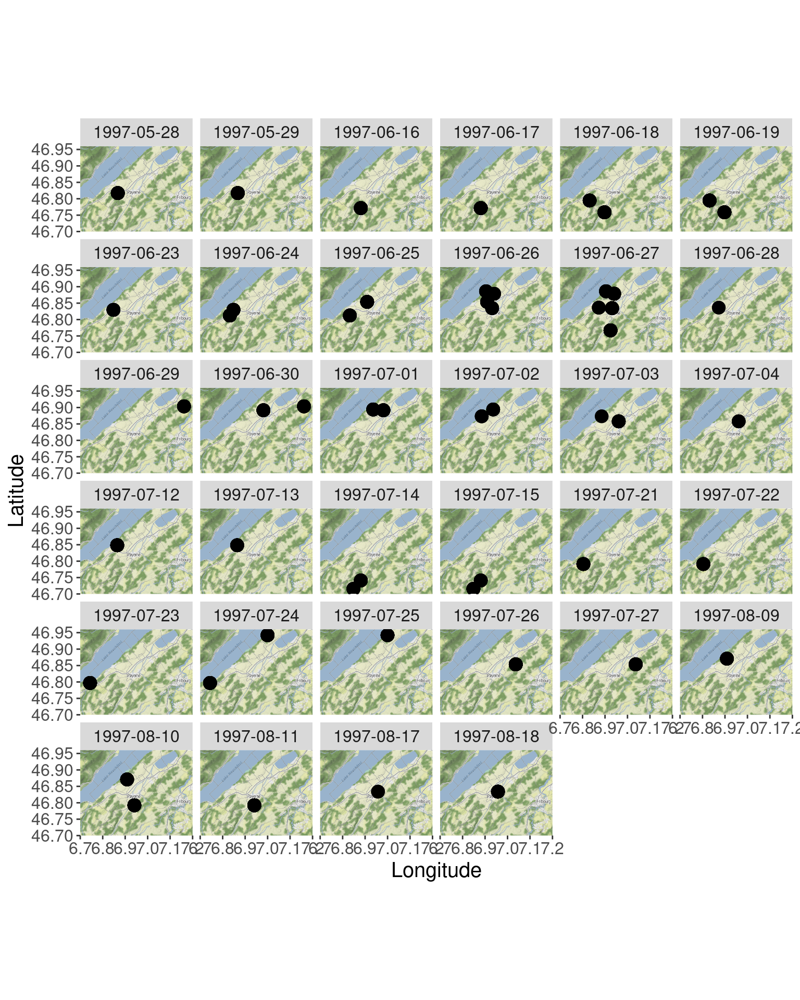

# Necessary packages from original code
library(lattice)
library(ggplot2)
library(ggmap)
library(lme4)
library(mgcv)
# Recommended by the authors but outdated
# library(maptools) => We will use other packages
# library(sp) => We won't need it with sf
# library(rgdal) => We won't need it with sf
# Using sf
library(sf)
# Other additionnal packages to improve upon the provided code
library(lubridate)
library(gganimate)
library(here)
library(leaflet)
library(equatiomatic)Zuur & Ieno’s 10 steps
This website in a reproducible exploration of “A protocol for conducting and presenting results of regression-type analyses” by Alain F. Zuur, and Elena N. Ieno.
The 10 steps are all first presented in figure 1 of the paper:

The focus of the 10 steps on on linear modelling of the type GLM, GLMM etc and uses R although it generalizes to other languages.
Accessing data and code for reproducibility
The paper provides data and code on Dryad but is not set up for interactive report-style reproducibility with package versioning. To fix that, I used a quarto document with renv to produce this website. In order to reproduce the analysis here, you can clone the repository in RStudio, install the renv package, run renv::restore() and you should be good to go for running the quarto notebook!
I had to make some changes to the packages used. Let’s load what we will need now. Packages maptools and rgdal are deprecated as far as I can tell, and sp is just not recommendable for forward compatibility in 2024.
In order to access the data and code, we would ideally use a package like rdryad to do so, but I have been getting nowhere with it. It is probably broken as it is soon to be superseded by the deposits package. If I forget to update this website with the latest deposits API, feel free the file an issue.
In the meantime, let’s download the files one by one.
# Create the file urls and destination files names & names
base_dryad_url <- "https://datadryad.org/stash/downloads/file_stream/"
file_url_list <- paste0(base_dryad_url, c(37547:37550))
files_names <- c("monkeys.txt", "owls.txt", "oystercatchers.txt", "zurr_iena_2016.R")
files_paths_list <- paste0(c(rep("data/", 3), "scripts/"), files_names)
# If the file exists already, do not download it
ret <- mapply(\(file_url, file_path) {
if (!file.exists(file_path)) download.file(file_url, destfile = file_path)
}, file_url_list, files_paths_list)You can take a look at the code in the scripts directory, we will be copying code from there into this document. Now, let’s load the data properly before we get anything else done.
Owls <- read.table(here("data", "owls.txt"),
header = TRUE,
dec = ".")
# SiblingNegotiation is too long....use shorter name:
Owls$NCalls <- Owls$SiblingNegotiation
# Let's look at it
names(Owls) [1] "Nest" "Xcoord" "Ycoord"
[4] "FoodTreatment" "SexParent" "ArrivalTime"
[7] "SiblingNegotiation" "BroodSize" "NegPerChick"
[10] "Date" "Day" "Month"
[13] "NCalls" str(Owls)'data.frame': 599 obs. of 13 variables:
$ Nest : chr "AutavauxTV" "AutavauxTV" "AutavauxTV" "AutavauxTV" ...
$ Xcoord : int 556216 556216 556216 556216 556216 556216 556216 556216 556216 556216 ...
$ Ycoord : int 188756 188756 188756 188756 188756 188756 188756 188756 188756 188756 ...
$ FoodTreatment : chr "Deprived" "Deprived" "Deprived" "Deprived" ...
$ SexParent : chr "Male" "Male" "Male" "Male" ...
$ ArrivalTime : num 22.2 22.5 22.6 22.6 22.6 ...
$ SiblingNegotiation: int 4 2 2 2 2 18 18 3 3 3 ...
$ BroodSize : int 5 5 5 5 5 5 5 5 5 5 ...
$ NegPerChick : num 0.8 0.4 0.4 0.4 0.4 3.6 3.6 0.6 0.6 0.6 ...
$ Date : chr "12/07/97" "12/07/97" "12/07/97" "12/07/97" ...
$ Day : int 12 12 12 12 12 12 12 12 12 12 ...
$ Month : int 7 7 7 7 7 7 7 7 7 7 ...
$ NCalls : int 4 2 2 2 2 18 18 3 3 3 ...head(Owls) Nest Xcoord Ycoord FoodTreatment SexParent ArrivalTime
1 AutavauxTV 556216 188756 Deprived Male 22.25
2 AutavauxTV 556216 188756 Deprived Male 22.53
3 AutavauxTV 556216 188756 Deprived Male 22.56
4 AutavauxTV 556216 188756 Deprived Male 22.61
5 AutavauxTV 556216 188756 Deprived Male 22.65
6 AutavauxTV 556216 188756 Deprived Male 22.76
SiblingNegotiation BroodSize NegPerChick Date Day Month NCalls
1 4 5 0.8 12/07/97 12 7 4
2 2 5 0.4 12/07/97 12 7 2
3 2 5 0.4 12/07/97 12 7 2
4 2 5 0.4 12/07/97 12 7 2
5 2 5 0.4 12/07/97 12 7 2
6 18 5 3.6 12/07/97 12 7 18OC <- read.table(here("data", "oystercatchers.txt"),
header = TRUE,
dec = ".")
# Let's look at it
names(OC)[1] "ShellLength" "Month" "FeedingType" "FeedingPlot"str(OC)'data.frame': 197 obs. of 4 variables:
$ ShellLength: num 1.9 2.16 2.17 2.34 2.2 2.2 1.92 2.11 2.17 2.41 ...
$ Month : chr "Dec" "Dec" "Dec" "Dec" ...
$ FeedingType: chr "Hammerers" "Hammerers" "Stabbers" "Hammerers" ...
$ FeedingPlot: chr "B" "B" "B" "B" ...head(OC) ShellLength Month FeedingType FeedingPlot
1 1.90 Dec Hammerers B
2 2.16 Dec Hammerers B
3 2.17 Dec Stabbers B
4 2.34 Dec Hammerers B
5 2.20 Dec Stabbers B
6 2.20 Dec Hammerers BMonkeys <- read.table(here("data", "monkeys.txt"),
header = TRUE)
# Let's look at it
names(Monkeys) [1] "SubordinateGrooms" "DominantGrooms" "RankDifference"
[4] "Relatedness" "GroomSymmetry" "Time"
[7] "FocalHour" "FocalGroomer" "Receiver"
[10] "GroupSize" str(Monkeys)'data.frame': 1674 obs. of 10 variables:
$ SubordinateGrooms: chr "yes" "yes" "yes" "yes" ...
$ DominantGrooms : chr "no" "yes" "yes" "no" ...
$ RankDifference : num 0.697 0.632 0.169 0.378 0.511 ...
$ Relatedness : num 0.224 0.682 0.707 0.291 0.453 ...
$ GroomSymmetry : int 1 1 0 1 1 1 0 1 1 1 ...
$ Time : num 4.19 5.6 6.16 6.98 2.85 ...
$ FocalHour : int 71 72 72 73 74 75 75 75 75 75 ...
$ FocalGroomer : chr "ade" "vic" "vic" "pre" ...
$ Receiver : chr "ban" "yao" "pre" "nai" ...
$ GroupSize : chr "large" "large" "large" "large" ...head(Monkeys) SubordinateGrooms DominantGrooms RankDifference Relatedness GroomSymmetry
1 yes no 0.6969321 0.2238303 1
2 yes yes 0.6324555 0.6823489 1
3 yes yes 0.1690309 0.7071068 0
4 yes no 0.3779645 0.2913760 1
5 yes yes 0.5107539 0.4529901 1
6 yes yes 0.2948839 0.4539824 1
Time FocalHour FocalGroomer Receiver GroupSize
1 4.186111 71 ade ban large
2 5.601667 72 vic yao large
3 6.164167 72 vic pre large
4 6.976111 73 pre nai large
5 2.850556 74 dys ver small
6 8.605278 75 pox ecz smallStep 1: State appropriate questions
The key idea is to have the salient question of the analysis in mind at the start, and formulate them properly. The example here is a study on the “vocal behavior of barn owl siblings” with a N = 28. The hypothesis is that food availability will influence “sibling negotiation”, proxied by the number of calls in the nest, sampled with microphones. Half the nests get extra food (treatment: satiated) and the other half is starved (treatment: deprived ; surprisingly no control?).
The 3 covariates are time, food treatment (satiated or deprived) and sex of parent. The question is :
- Does the relationship between sibling negotiation and sex of the parent differ with food treatment, and does the effect of time on sibling negotiation differ with food treatment?
Note that the question contains the 3 terms and expected interactions.
The authors warn against breaking down the questions into smaller questions such as “Is there an effect of sex of the parent?”, as “A potential problem with this approach is that the residuals of one model may show patterns when compared with the covariates not used in that model, which invalidates the model assumptions.”
I find this a little surprising because I was taught to build simple models before complex ones, and would naturally work with simpler single covariate models first.
Step 2: Visualize the experimental design
This step is simple yet sometimes overlooked: visualize the sampling protocol and experimental design preferably with the help of a map.
Below we use the sf package to parse the data as spatial data.
# Parse the dataframe as a sf object with the proper projection, and reproject as
# WGS 84 CRS (LAT / LONG)
Owls_sf <- st_as_sf(Owls, coords = c("Xcoord", "Ycoord"))
WGS84 <- st_crs("+proj=longlat +datum=WGS84")
projSWISS <- st_crs("+init=epsg:21781")Warning in CPL_crs_from_input(x): GDAL Message 1: +init=epsg:XXXX syntax is
deprecated. It might return a CRS with a non-EPSG compliant axis order.st_crs(Owls_sf) <- st_crs(projSWISS)
Owls_sf_tmp <- st_transform(Owls_sf, WGS84)
Owls_sf_wgs84 <- cbind(Owls_sf_tmp, st_coordinates(Owls_sf_tmp))
# Let's look at it
head(Owls_sf_wgs84)Simple feature collection with 6 features and 13 fields
Geometry type: POINT
Dimension: XY
Bounding box: xmin: 6.864574 ymin: 46.84849 xmax: 6.864574 ymax: 46.84849
Geodetic CRS: +proj=longlat +datum=WGS84
Nest FoodTreatment SexParent ArrivalTime SiblingNegotiation BroodSize
1 AutavauxTV Deprived Male 22.25 4 5
2 AutavauxTV Deprived Male 22.53 2 5
3 AutavauxTV Deprived Male 22.56 2 5
4 AutavauxTV Deprived Male 22.61 2 5
5 AutavauxTV Deprived Male 22.65 2 5
6 AutavauxTV Deprived Male 22.76 18 5
NegPerChick Date Day Month NCalls X Y
1 0.8 12/07/97 12 7 4 6.864574 46.84849
2 0.4 12/07/97 12 7 2 6.864574 46.84849
3 0.4 12/07/97 12 7 2 6.864574 46.84849
4 0.4 12/07/97 12 7 2 6.864574 46.84849
5 0.4 12/07/97 12 7 2 6.864574 46.84849
6 3.6 12/07/97 12 7 18 6.864574 46.84849
geometry
1 POINT (6.864574 46.84849)
2 POINT (6.864574 46.84849)
3 POINT (6.864574 46.84849)
4 POINT (6.864574 46.84849)
5 POINT (6.864574 46.84849)
6 POINT (6.864574 46.84849)The code suggests to write the points as a .kml file to open in Google Earth.
# Write the points as kml, wich you can open in google earth
owls_kml_file <- here("data", "Owls_wgs84.kml")
if (!file.exists(owls_kml_file)) {
st_write(Owls_sf_wgs84,
owls_kml_file,
driver = "kml", delete_dsn = TRUE)
}The code relied ggmap, which makes an API request to Google maps. Of course, in 2024 we are required to use an API key for that. As an alternative I suggest leaflet which is more likely to work in the future and does not require to mess with API keys.
leaflet(Owls_sf_wgs84) %>%
addTiles() %>% # Add default OpenStreetMap map tiles
addMarkers()For a more publication-oriented map with ggmap I would recommend using the stadiamap API.
# I suppress the API message
glgmap <- suppressMessages(get_stadiamap(c(6.7, 46.70, 7.2, 46.96)))
p_ggmap <- ggmap(glgmap) +
geom_point(aes(X, Y),
data = Owls_sf_wgs84,
size = 4) +
xlab("Longitude") + ylab("Latitude") +
theme(text = element_text(size = 15))
p_ggmapWe can also do a simple sf + ggplot plot.
p_simple <- ggplot(Owls_sf_wgs84) +
geom_sf(size = 4) +
xlab("Longitude") + ylab("Latitude") +
theme_light() + theme(text = element_text(size = 15))
p_simpleFinally, the code suggest another two plots that are not in the paper, but are useful. The first time is a plot of the time series.
p_series <- ggplot() +
xlab("Arrival time") + ylab("Number of calls") +
theme(text = element_text(size = 15)) + theme_light() +
geom_point(data = Owls_sf_wgs84,
aes(x = ArrivalTime,
y = NCalls,
color = FoodTreatment),
size = 2) +
geom_line(data = Owls_sf_wgs84,
aes(x = ArrivalTime,
y = NCalls,
group = FoodTreatment,
color = FoodTreatment)) +
facet_wrap( ~ Nest, ncol = 4)
p_series
The second shows how sampling unfolds across space and time, but I find the plot a little unwieldy as it facets multiple maps.
# We parse the date column as a proper date
Owls_sf_wgs84$Date_parsed <- as_date(Owls_sf_wgs84$Date, format = "%d/%m/%y")
p_ggmap_facet <- ggmap(glgmap) +
geom_point(aes(X, Y),
data = Owls_sf_wgs84,
size = 4) +
xlab("Longitude") + ylab("Latitude") +
theme(text = element_text(size = 15)) +
facet_wrap(~Date_parsed)
p_ggmap_facet
Step 3: Conduct data exploration
There is another even older Zurr et al. paper for the 10 steps of data exploration. The first figure of that paper gives you the gist of the protocol.

In that paper, the authors warn against “data dredging”, which is when the patterns explored and discovered during data exploration influence data analysis unhealthily. Modeling and testing decisions should be determined a priori, using knowledge of the system and not a posteriori after exploration of the data. When understanding is limited, we can use exploration to help generate hyotheses, but that is fundamentally different from the principled workflow of this paper.
Then, the authors warn against certain tests and visual tools, including normality tests. The paper is a useful read and could be the next iteration of that project.
We now move from owls to oystercatchers. The study related the length of clams preyed upon and the feeding behavior of oystercatchers, accross time and space. The authors describe how the design suggests a 3-way interaction term that would in practicality only be driven by a couple of data points. The following plot shows that in location A in December, there were only two observations, both showing the same value. Note that I modified the plot to add colors to those problematic points to make the visualization clearer
# Set a color column
OC$color_pt <- ifelse(OC$Month == "Dec" &
OC$FeedingType == "Stabbers" &
OC$FeedingPlot == "A",
"red", "grey")
# Here is the code for Figure 3
p_OC <- ggplot() + xlab("Feeding type") + ylab("Shell length (mm)") +
geom_point(data = OC,
aes(x = FeedingType, y = ShellLength),
color = OC$color_pt,
position = position_jitter(width = .03),
size = 2) +
facet_grid(Month ~ FeedingPlot,
scales = "fixed") +
theme_light() +
theme(text = element_text(size = 15)) +
theme(legend.position = "none") +
theme(strip.text.y = element_text(size = 15,
colour = "black",
angle = 20),
strip.text.x = element_text(size = 15,
colour = "black",
angle = 0)
)
p_OCYou should spend a good amount of time on data exploration. It will also help you identify data quality issues and encoding errors.
Note that it is sometimes useful to tabulate data across levels of a given factor.
table(OC$Month, OC$FeedingPlot, OC$FeedingType), , = Hammerers
A B C
Dec 17 14 26
Jan 43 31 34
, , = Stabbers
A B C
Dec 2 5 15
Jan 4 3 3Step 4: Identify the dependency structure in the data
The authors warn that it is rare to find a dataset without dependency structures. They advise GLMM as a way to deal with pseudoreplicated data (relying on pooling as a way to properly model dependencies between, say, sampling locations etc..).
We now move on to the baboon dataset. I think it is the same dataset used in Statistical Rethinking for teaching multilevel modelling. The design: the researchers are interested in understanding grooming behavior between baboons. Baboon may hold different ranks within the troop (represented as a value between 0 and 1). Some 60 baboons are sampled multiple times, for an hour at a time, its grooming behavior recorded, making the receiver of the behavior another layer of dependency. This pseudoreplication structure requires a mixed-effects model with random effects (two-way nested AND crossed). The structure looks like this:

The authors suggest to properly report the structure. Personally I love seeing, in papers, when both a graphical, a textual AND a mathematical description is given.
The textual description for baboon and owl data:
This data set consists of multiple observations of rank differences of a given baboon and receivers within a focal hour, along with multiple observations of a given receiver. We therefore applied a mixed-effects model with the random effect focal hour nested within the random effect baboon and a crossed random effect receiver
We sampled each nest multiple times and therefore applied a GLMM in which nest is used as random intercept, as this models a dependency structure among sibling negotiation observations of the same nest
Step 5: Present the statistical model
Speaking of mathematical description, this step is where the authors suggest this is given and stated clearly, under the form of an equation. Here is what it would look like for the owl data:

One of the key element in this is how the error structure of the data is stated clearly: here the count of calls is modelled as a Poisson distribution. It shows the log link function and how the model is clearly defined. The authors give further advice for how to explain choices of distributions.
For the baboon data:

If only all papers when to that length in describing their models (although I am definitely guilty of omitting details as well). The amazing package equatiomatic makes this easier.
# Although we will look at the model formulation at the next step in greater
# details, let's try and use it here with equationmatic
M1 <- glmer(NCalls ~ FoodTreatment + ArrivalTime + SexParent +
FoodTreatment : SexParent +
FoodTreatment : ArrivalTime +
(1 | Nest),
family = poisson,
data = Owls)
extract_eq(M1, wrap = TRUE, terms_per_line = 1)\[ \begin{aligned} \operatorname{NCalls}_{i} &\sim \operatorname{Poisson}(\lambda_i) \\ \log(\lambda_i) &=\alpha_{j[i]}\ + \\ &\quad \beta_{1}(\operatorname{FoodTreatment}_{\operatorname{Satiated}})\ + \\ &\quad \beta_{2}(\operatorname{ArrivalTime})\ + \\ &\quad \beta_{3}(\operatorname{SexParent}_{\operatorname{Male}})\ + \\ &\quad \beta_{4}(\operatorname{FoodTreatment}_{\operatorname{Satiated}} \times \operatorname{SexParent}_{\operatorname{Male}})\ + \\ &\quad \beta_{5}(\operatorname{ArrivalTime} \times \operatorname{FoodTreatment}_{\operatorname{Satiated}}) \\ \alpha_{j} &\sim N \left(\mu_{\alpha_{j}}, \sigma^2_{\alpha_{j}} \right) \text{, for Nest j = 1,} \dots \text{,J} \end{aligned} \]
Step 6: Fit the model
The authors first remind that it is important to say what software was used to fit the model, directly in the text. They add details as to how to report a MCMC analysis. This section of the paper is not very verbose and could have been expanded to talk about how versions of packages can be very relevant to the fitted results. Also, the paper could have discussed how fitted models are stored and conserved (with rds files) and implications of all this kind of stuff for the ability of future readers to make sense of the model.
One note concerning the owl dataset: in the code, the authors mention that the response variable should probably be transformed (but for some reason they do not show the process). They also mention that brood size should probably be used an offset in the model - but did not want to confuse readers of the paper with it, at the risk of confusing readers of the code by not explaining why and how the offset is needed here.
Let’s see the model again (note the additional code for the offset, if you want, but we won’t use it for the sake of consistency with the paper).
#For the offset we need:
Owls$LogBroodSize <- log(Owls$BroodSize)
library(lme4)
M1 <- glmer(NCalls ~ FoodTreatment + ArrivalTime + SexParent +
FoodTreatment : SexParent +
FoodTreatment : ArrivalTime +
#offset(LogBroodSize) + #Feel free to include
(1 | Nest),
family = poisson,
data = Owls)
# Numerical results:
summary(M1)Generalized linear mixed model fit by maximum likelihood (Laplace
Approximation) [glmerMod]
Family: poisson ( log )
Formula:
NCalls ~ FoodTreatment + ArrivalTime + SexParent + FoodTreatment:SexParent +
FoodTreatment:ArrivalTime + (1 | Nest)
Data: Owls
AIC BIC logLik deviance df.resid
5011.4 5042.1 -2498.7 4997.4 592
Scaled residuals:
Min 1Q Median 3Q Max
-3.4559 -1.7563 -0.6413 1.1770 11.1040
Random effects:
Groups Name Variance Std.Dev.
Nest (Intercept) 0.235 0.4847
Number of obs: 599, groups: Nest, 27
Fixed effects:
Estimate Std. Error z value Pr(>|z|)
(Intercept) 5.1698547 0.2926462 17.666 <2e-16 ***
FoodTreatmentSatiated -0.6540263 0.4686680 -1.396 0.1629
ArrivalTime -0.1296994 0.0113051 -11.473 <2e-16 ***
SexParentMale -0.0094526 0.0453669 -0.208 0.8349
FoodTreatmentSatiated:SexParentMale 0.1297493 0.0704391 1.842 0.0655 .
FoodTreatmentSatiated:ArrivalTime -0.0004913 0.0192171 -0.026 0.9796
---
Signif. codes: 0 '***' 0.001 '**' 0.01 '*' 0.05 '.' 0.1 ' ' 1
Correlation of Fixed Effects:
(Intr) FdTrtS ArrvlT SxPrnM FTS:SP
FdTrtmntStt -0.545
ArrivalTime -0.938 0.570
SexParentMl -0.060 0.055 -0.038
FdTrtmS:SPM 0.033 -0.049 0.024 -0.606
FdTrtmnS:AT 0.539 -0.993 -0.573 0.004 -0.043Step 7: Validate the model
What is validation? “Model validation confirms that the model complies with underlying assumptions.”
Regression models have assumptions (in particular about the structure of residuals) and the fore violation of those assumptions may lead to increase bias, type 1 error rate, etc. Residuals should be plotted against all variables (and time and space dimensions if applicable) and autocorellation should be modeled if applicable.
To get to the residuals and fitted values:
E1 <- resid(M1, type = "pearson")
F1 <- fitted(M1)
str(E1) Named num [1:599] -1.19 -1.87 -1.87 -1.85 -1.85 ...
- attr(*, "names")= chr [1:599] "1" "2" "3" "4" ...str(F1) Named num [1:599] 7.18 6.93 6.9 6.85 6.82 ...
- attr(*, "names")= chr [1:599] "1" "2" "3" "4" ...In the context of the owl data, the authors describe finding a pattern of over dispersion by calculating an over dispersion metric:
# Get the dispersion statistic
# (not counting random effects as parameters)
E1 <- resid(M1, type = "pearson")
N <- nrow(Owls)
p <- length(fixef(M1)) + 1
sum(E1^2) / (N - p)[1] 5.439501Not in the paper, they also flag a potential issue with heterogeneity…
plot(x = F1,
y = E1,
xlab = "Fitted values",
ylab = "Pearson residuals")
abline(h = 0, lty = 2)
Building up to the next figure in the paper, we plot arrival time against those residuals.
plot(x = Owls$ArrivalTime,
y = E1,
xlab = "Arrival time (h)",
ylab = "Pearson residuals")
abline(h = 0, lty = 2)Suspecting a non-linear structure, the authors decide to fit a GAM on the residuals. As they write in the code “If the smoother is not significant, or if it explains a small amount of variation, then there are indeed no residual patterns.”
T2 <- gam(E1 ~ s(ArrivalTime), data = Owls)
summary(T2)
Family: gaussian
Link function: identity
Formula:
E1 ~ s(ArrivalTime)
Parametric coefficients:
Estimate Std. Error t value Pr(>|t|)
(Intercept) -0.01448 0.09185 -0.158 0.875
Approximate significance of smooth terms:
edf Ref.df F p-value
s(ArrivalTime) 7.159 8.206 5.011 4.88e-06 ***
---
Signif. codes: 0 '***' 0.001 '**' 0.01 '*' 0.05 '.' 0.1 ' ' 1
R-sq.(adj) = 0.0615 Deviance explained = 7.27%
GCV = 5.1235 Scale est. = 5.0537 n = 599plot(T2)
abline(h = 0, lty = 2)Now, we can reproduce the next figure in the paper. The authors used a plotting technique for the predictions which consists in creating a grid of arrival times to feed to the predict function. To this we add the smoother and its confidence interval, all of it using ggplot2.
time_range <- range(Owls$ArrivalTime)
MyData <- data.frame(ArrivalTime = seq(time_range[1], time_range[2],
length = 100))
P <- predict(T2, newdata = MyData, se = TRUE)
MyData$mu <- P$fit
MyData$SeUp <- P$fit + 1.96 * P$se
MyData$SeLo <- P$fit - 1.96 * P$se
Owls$E1 <- E1
p_M1 <- ggplot() +
xlab("Arrival time (h)") + ylab("Pearson residuals") +
theme(text = element_text(size = 15)) +
geom_point(data = Owls,
aes(x = ArrivalTime, y = E1),
size = 1) +
geom_line(data = MyData,
aes(x = ArrivalTime, y = mu),
colour = "black") +
geom_ribbon(data = MyData,
aes(x = ArrivalTime,
ymax = SeUp,
ymin = SeLo ),
alpha = 0.2) +
geom_hline(yintercept = 0)
p_M1From this exploration of the residuals, the authors conclude that we should be using a GAMM instead…
A couple of notes: the authors mention in a figure caption that the smooth only explains 7% of the variation in the residuals, which as I understand it (maybe badly), is quite low. They also mention other factors that could be responsible for overdispersion: “a missing covariate, the relatively large number of zero observations (25%) or dependency within (or between) nests”. The pattern with arrival time seems quite clear, and I am left convinced it should be dealt with in the model. I am not left convinced that a complex GAMM would be the first answer, however.